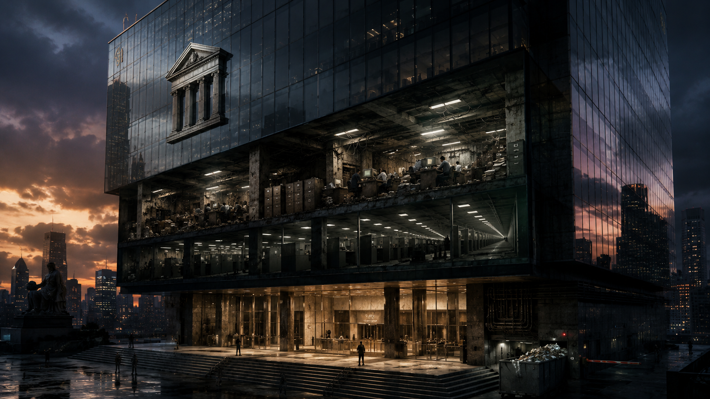

Grandes Estruturas Obsoletas

Há setores inteiros da economia que aprenderam a envelhecer sem perder a pose. Não porque tenham descoberto o segredo da renovação, mas porque transformaram a própria estagnação em modelo de negócio. São impérios de carpete espesso, fachada espelhada e discurso institucional impecável, sustentados por uma máquina que extrai valor não da excelência, nem da invenção, nem da coragem competitiva, mas da inércia. Onde deveria haver serviço, há ritual. Onde deveria haver eficiência, há teatro da eficiência.
Essas organizações se apresentam como fortalezas da solidez. Vendem previsibilidade, tradição, governança, prudência. Por dentro, porém, muitas operam como dinossauros analógicos protegidos por uma cerca invisível de influência, norma e proximidade com o poder. Não precisam inovar porque a margem não nasce da superioridade técnica, mas da capacidade de cobrar caro em um ambiente domesticado para que o novo chegue sempre algemado.
É nesse ecossistema que florescem as Grandes Estruturas Obsoletas: gigantes formais, reverentes consigo mesmas, profundamente hábeis em parecer modernas enquanto administram um miolo envelhecido. São empresas que dominam a arte de parecer futuristas em apresentações de slides e paleolíticas na rotina de trabalho. O prédio fala em transformação. O elevador fala em prestígio. O hall fala em poder. O computador do analista, no entanto, fala em 2014.
Fachadas assim não existem por acidente. Elas são a expressão física de uma escolha moral: investir na aparência do poder para disfarçar a decadência do método.
A Fachada de Vidro e o Miolo de Barro
Quem entra pela primeira vez nesses ambientes costuma ser seduzido pelo cenário. Recepção ampla. Vidro por toda parte. Mobiliário importado. Café com assinatura. Obras abstratas estrategicamente penduradas para sugerir sofisticação e apetite por inovação. Tudo calculado para comunicar uma mensagem muito simples: aqui circula dinheiro; logo, aqui circula competência.
Mas basta atravessar a porta de acesso restrito para o encanto perder o verniz. O luxo termina exatamente onde o trabalho começa. Atrás da parede de vidro, multiplicam-se notebooks exaustos, estações lentas, permissões quebradas, VPNs que caem, sistemas internos que só funcionam em combinações específicas de navegador, planilhas que sustentam operações críticas e fluxos manuais remendados com a liturgia do “sempre foi assim”. A abundância para na cenografia.
É a economia de palitos em sua forma mais obscena. Milhões podem ser liberados para bônus, eventos corporativos, consultorias com sobrenome estrangeiro e campanhas institucionais sobre o futuro. Mas a simples solicitação de mais memória RAM para um desenvolvedor passa a ser tratada como se ameaçasse o equilíbrio fiscal do país. Aprova-se o vídeo inspirador sobre transformação digital. Adia-se a troca do servidor que trava duas vezes por semana.
A precariedade técnica nesses lugares não é mero descuido operacional. Ela é sintoma de um sistema que considera a infraestrutura de trabalho um custo suspeito quando beneficia quem produz, mas considera natural qualquer gasto que embeleze o poder ou proteja a camada gerencial de constrangimento. A verba existe. Só não existe para aquilo que reduz atrito real.
Daí nasce um paradoxo revelador: companhias que movimentam cifras monumentais conseguem fazer seus profissionais perderem horas por dia esperando máquina reiniciar, solicitando acesso ou copiando dados entre sistemas que se recusam a conversar. O atraso não é exceção. É mecanismo. A lentidão organiza a dependência. Ferramenta quebrada produz subordinação. Processo manual produz feudo.
Não por acaso, o discurso institucional insiste em produtividade enquanto o cotidiano opera pela sabotagem silenciosa da capacidade de produzir. A retórica fala em alta performance. A prática entrega fadiga administrativa. O resultado é um regime de desperdício sofisticado: paga-se caro por gente qualificada para usá-la como correia humana entre sistemas precários.
O Ecossistema da Paralisia
Toda grande estrutura obsoleta depende de um arranjo organizacional compatível com sua decadência funcional. Não basta ter sistemas ruins. É preciso ter uma hierarquia capaz de impedir que eles sejam substituídos com rapidez. É aí que entra a caciquocracia.
Caciquocracia é o regime no qual a autoridade se multiplica enquanto a responsabilidade evapora. Há chefes de célula, chefes de capítulo, chefes de frente, chefes de governança, chefes de alinhamento, chefes de esteira, chefes de eficiência operacional e chefes cujo trabalho principal parece ser convocar reuniões para discutir por que outras reuniões não produziram alinhamento suficiente. O organograma cresce para cima como se fosse uma planta parasitária alimentada por PowerPoint.
Cada camada adicional promete coordenação. Na prática, entrega amortecimento. Quanto mais chefias, menos decisão. Quanto mais comitês, menos autoria. O trabalho técnico passa a existir como matéria-prima para apresentações de status e planilhas coloridas que simulam controle sobre uma realidade que ninguém quer encarar. Gerencia-se o indicador porque enfrentar a causa exigiria conflito com interesses internos, e conflito é precisamente o que a caciquocracia foi desenhada para dissolver.
Nessa paisagem, a consultoria externa cumpre um papel decisivo. Ela raramente entra apenas para resolver um problema técnico. Entra para redistribuir culpa, terceirizar desconforto e produzir um documento que permita aos decisores dizer, futuramente, que seguiram recomendação especializada. A consultoria funciona como biombo institucional. Um escudo elegante. Um selo de neutralidade para decisões que quase nunca são neutras.
Há, evidentemente, consultores competentes. O ponto não é esse. O ponto é o uso político da consultoria em ambientes onde os dirigentes perderam a musculatura intelectual para assumir escolhas técnicas diante do próprio corpo executivo. Em vez de dizer “vamos fazer assim porque entendemos o problema”, prefere-se dizer “o parceiro estratégico recomenda esta abordagem”. O idioma muda. A covardia permanece.
Nesse modelo, o especialista interno vira ameaça em duas frentes. Se sabe demais, constrange a chefia. Se propõe demais, desestabiliza o conforto das mediações. Por isso a casa aprende a premiar o perfil que administra o impasse sem resolvê-lo. Resolver desloca poder. Manter a coisa em suspenso distribui relevância para mais gente. A paralisia, aqui, não é acidente burocrático. É pacto de sobrevivência.
É assim que o atraso se institucionaliza sem precisar se declarar atraso. Ele se veste de prudência. De compliance. De governança. De visão de longo prazo. Tudo palavras importantes, todas passíveis de uso legítimo, mas frequentemente instrumentalizadas como verniz moral para a manutenção de uma máquina que teme menos o erro do que a perda de intermediação.
A Aliança com o Poder
O aspecto mais interessante dessas estruturas não está dentro delas, mas na relação que mantêm com o ambiente ao redor. Empresas realmente expostas à competição costumam inovar por necessidade. Melhoram processos porque o concorrente pode tomar mercado. Reduzem atrito porque o cliente pode partir. Investem em tecnologia porque o custo da ineficiência aparece rápido no caixa.
Já os grandes aparelhos protegidos vivem outra pedagogia. Seu lucro não decorre prioritariamente da admiração do mercado, mas de barreiras formais e informais que diminuem o preço da mediocridade. Quando a margem nasce em parte da opacidade, das taxas, das travas regulatórias desenhadas por quem frequenta os mesmos salões e dos canais de influência que filtram a entrada de competidores, a inovação deixa de ser urgência e passa a ser peça de comunicação.
Não se trata de uma conspiração de cinema. Trata-se de algo mais banal e, por isso mesmo, mais resistente: a sedimentação de interesses entre atores que aprenderam a chamar de estabilidade aquilo que, na prática, funciona como fechamento de mercado. A proximidade com o poder regulador cria um colchão institucional. Nesse colchão, a pressão competitiva perde parte da força. E sem pressão, a empresa deixa de precisar merecer plenamente a renda que obtém.
Daí a elegância cínica de certos discursos sobre modernização. Fala-se muito em responsabilidade setorial, segurança sistêmica, robustez institucional, maturidade do ecossistema. Tudo isso pode até conter parcelas de verdade. Mas com frequência serve para produzir uma atmosfera em que qualquer abertura real pareça irresponsável e qualquer inovação que reduza intermediações pareça ameaça à ordem.
É o triunfo da inércia rentável. O extrativismo de taxas dispensa imaginação industrial. Em vez de criar valor novo, aperfeiçoa-se o mecanismo de captura sobre fluxos já existentes. Em vez de conquistar o cliente pela superioridade do serviço, administra-se o ambiente para que a escolha do cliente seja estreita, cansativa ou irrelevante. Em vez de competir, negocia-se o desenho da arena.
É por isso que tantos desses gigantes parecem surpresos quando finalmente enfrentam algum choque real. Uma nova tecnologia. Um competidor menos reverente. Uma geração de profissionais menos disposta a naturalizar absurdo operacional. Subitamente descobre-se que o prédio brilhava mais do que o método, que a marca valia mais do que a experiência e que a reputação de inevitabilidade escondia um coração organizacional cansado.
O Custo Humano
Nenhuma grande estrutura obsoleta se sustenta apenas por organograma e proteção externa. Ela precisa moldar subjetividades. Precisa ensinar às pessoas o que podem desejar, até onde podem falar e que tipo de inteligência será considerada aceitável. Esse é o plano menos visível e talvez o mais corrosivo.
Em muitos desses ambientes, o talento novo chega como promessa e rapidamente passa a ser tratado como ruído. Não porque falte capacidade, mas porque energia fresca ilumina decadências antigas. Quem enxerga demais ameaça quem se especializou em normalizar a precariedade. Quem pergunta “por que fazemos assim?” introduz uma pergunta perigosa: “quem ganha com isso continuar assim?” O sistema responde da forma clássica. Não combate a pergunta frontalmente. Desgasta o perguntador.
É aqui que aparece a inveja institucional. Não a inveja banal, individual, quase folclórica. Mas uma inveja organizada, distribuída pelos mecanismos da casa. A mediocridade não precisa odiar explicitamente o mérito; basta cercá-lo de ritos, atrasos, filtros e avaliações nebulosas até que ele aprenda a se autocensurar. O profissional promissor passa a ser descrito como “ansioso”, “pouco político” ou “tecnicista demais”. Quase sempre significa apenas que ele ainda não aprendeu a venerar o teatro da eficiência.
O ambiente hostil não se manifesta somente em gritos ou humilhações abertas. Muitas vezes ele opera por microdesautorizações contínuas. Ideias são ignoradas até reaparecerem na voz correta. Alertas técnicos são tratados como pessimismo. Propostas de melhoria viram demanda por “mais alinhamento”. A honestidade intelectual é reclassificada como problema de postura. A clareza vira inconveniência. A competência, quando não ajoelha diante do rito, é recodificada como falha de soft skill.
Com o tempo, instala-se uma pedagogia perversa. Os melhores aprendem a calar ou vão embora. Os adaptáveis aprendem a sobreviver pela diplomacia estéril. Os francamente medíocres descobrem que a burocracia pode ser uma forma eficaz de blindagem. Como tudo depende de fluxo, validação, parecer, comitê e consenso nebuloso, quase ninguém responde diretamente pelo dano.
O custo psíquico disso é alto. Trabalhar em ambientes assim produz uma fadiga que não se resume ao excesso de horas. É o desgaste de sentir a inteligência desperdiçada. É perceber que o esforço não encontra sistema à altura, apenas corredores bem iluminados e discursos prontos sobre excelência, cultura, propósito e legado.
Esse tipo de lugar adoece porque transforma lucidez em atrito. E toda organização que pune lucidez começa, cedo ou tarde, a apodrecer por dentro.
Conclusão: O Império da Aparência Cara
As Grandes Estruturas Obsoletas não são apenas empresas velhas. São arranjos sofisticados de preservação de poder. Sua genialidade triste está em converter deficiência em protocolo, atraso em prudência, privilégio em estabilidade e exploração em normalidade administrativa.
Seu problema central não é falta de dinheiro. É falta de necessidade moral de mudar. Enquanto o lucro vier da inércia protegida, da intermediação compulsória, do extrativismo de taxas e da aliança confortável com estruturas que desestimulam competição genuína, a inovação seguirá sendo cosmética. Haverá laboratório de tendências. Haverá discurso sobre futuro. Haverá painéis sobre transformação. E continuará faltando RAM para quem precisa entregar.
O retrato final é cruel porque é coerente. De um lado, vidraças reluzentes, marcas impecáveis, relatórios vistosos, bônus generosos e cerimônias intermináveis de autopromoção. Do outro, processos quebrados, talento drenado, medo distribuído, chefia em excesso e responsabilidade em falta. O prédio sobe. O método afunda.
Talvez essa seja a imagem mais fiel do nosso tempo institucional: um império da aparência cara construído sobre alicerces administrativos de barro. Ele impressiona à distância. Por dentro, pede para reiniciar a máquina e aguardar alguns minutos.